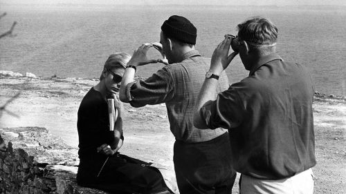
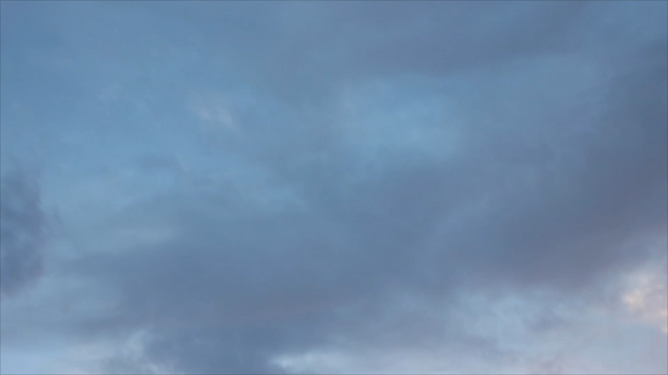

1

"SAY YOU LOVE ME" – self
My performance of a contemporary dance, 2015.
Choreographed by Emily Dumitru. Music by Jessie Ware.
about page
My performance of a contemporary dance, 2015.
Choreographed by Emily Dumitru. Music by Jessie Ware.
about page
2

STILL from CINEMA PARADISO (1988)
– Miramax
A beautiful shot of Toto, played by Salvatore Cascio, in the legendary film.
Directed by Giuseppe Tornatore. Music by Ennio Morricone.
computation page
A beautiful shot of Toto, played by Salvatore Cascio, in the legendary film.
Directed by Giuseppe Tornatore. Music by Ennio Morricone.
computation page
3

SHOT from mirrorshadow
– shot by Kira K. Clarke
details here: film page and choreography inspiration
details here: film page and choreography inspiration
4

SHOT from PERSONA (1966)
– Bo Arne Vibenius – Allstar/United Artists
A shot behind the scenes from the film Persona. Starring Bibi Andersson (left) and Liv Ullman. Directed by Ingmar Bergman (middle).
Cinematography by Sven Nykvist (right).
inspiration page
A shot behind the scenes from the film Persona. Starring Bibi Andersson (left) and Liv Ullman. Directed by Ingmar Bergman (middle).
Cinematography by Sven Nykvist (right).
inspiration page
5

Kira in ballet productions
– shot by Peter Armstrong
Featuring scenes from the classroom, The Nutcracker, and Coppelia.
details here: dance page
Featuring scenes from the classroom, The Nutcracker, and Coppelia.
details here: dance page
6

The SKY
– shot by Kira K. Clarke
thoughts page
thoughts page
7

shot from LA JETÉE (1962)
– Argos Films, Radio-Télévision Française
Directed by Chris Marker.
contact page
Directed by Chris Marker.
contact page
loader

Training to become film operator (1943)
– Netherlands Institue for Sound and Vision
Public Domain. Modified by myself to create loader.
– Netherlands Institue for Sound and Vision
Public Domain. Modified by myself to create loader.